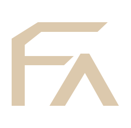

ФОРМА
АРХИТЕКТУРНАЯ ВИЗУАЛИЗАЦИЯ
ИНСТРУМЕНТ / 3D WORLD
Пространство проекта
← К проекту
Демонстрационный архитектурный мир
ОБЗОР
Подготавливаем архитектурную сцену…
FORMA / WORLD 01
ГЕОМЕТРИЯ БЕЗ ИЗМЕНЕНИЙ
↑
←
↓
→
Пробный 3D-мир: свободный обзор архитектуры и окружения.